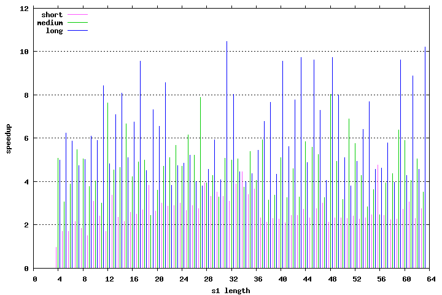

| Author: | Wojciech Muła, wojciech_mula@poczta.onet.pl |
|---|---|
| Added on: | 2008-05-27 |
This article is obsolete, refer to SIMD-friendly algorithms for substring searching.
Contents
String search is a common task in text processing. There are many algorithms that try to minimize number of exact comparing substrings.
One of them is Karp-Rabin algorithm — char-wise comparison is performed only when values of hash function calculated for a part of text and a substring are equal.
SSE4 introduced complex instruction MPSADBW which calculate eight Manhattan distances (L1) between given 4-byte vector and 8 subsequent vectors; if the distance is zero, then vectors are equal.
The idea of modification is to use equality of 4-byte substring's prefix instead of hash values equality. MPSADBW is fast, it has latency 4 cycles and throughput 2 cycles. Even if latency is not compensated, overall performance is very promising — 0.5 cycle per one 4-byte vectors comparison.
Unfortunately there are three disadvantages:
Load 4-byte prefix of substring (done once):
movdqu (%%eax), %%xmm0 ; xmm0 = "ABCD"
Load next 16 bytes of text (MPSADBW needs first 11 bytes):
movdqu (%%esi), %%xmm1 ; xmm1 = "ABCD__ABCD______"
; 0123456789abcdef <- index
addl $8, %%esi ; advance pointer
Locate prefix — result is vector of 8 words:
mpsadbw $0, %%xmm0, %%xmm1 ; ABCD__ABCD______
; ABCD => xmm1[0] := 0
; ABCD => xmm1[1] := x > 0
; ABCD => xmm1[2] := x > 0
; ABCD => xmm1[3] := x > 0
; ABCD => xmm1[4] := x > 0
; ABCD => xmm1[5] := x > 0
; ABCD => xmm1[6] := 0
; ABCD => xmm1[7] := x > 0
MPSADBW result is converted to word-mask:
pcmpeqw ZEROS, %%xmm1 ; xmm1 = [ffff|0000|0000|0000|0000|0000|fffff|0000]
If xmm1 is equal zero, goto 2.
Otherwise perform exact comparison of a substring and a text: words of value 0xffff indicate positions where the prefix is located. Comparison could be done with built-in functions like strncmp or memcmp.
However since the length of substring is known we can use few SSE instructions to compare short strings, up to 36 chars.
sse4_strstr.c include five functions:
There is a wrapper sse4_strstr that calls proper function depending on length of s1.
All functions fits following declaration:
foo(char* s1, int n1, char* s2, int n2);
Note: these functions were not well optimized, I guess there are room for some improvements, but at the moment don't have any ideas.
The application (sse4_strstr.c) loads some text file, and in a loop perform repeat substring searching using built-in function strstr or sse4_strstr wrapper.
With assistance of Python script following tests were done. Script loads desired text and picks 3*59 substring to locate. Substrings have length from 4 to 63 chars, their positions are selected from 3 different ranges:
Then results of built-in strstr and sse4_strstr are compared and if matched, performance tests were done. First strstr is measured — the number of iterations is adjusted to make running time longer than one second. Then sse4_strstr is timed using the same number of iterations.
Tests have been done on Core 2 Duo E8200 clocked at 2.6GHz, under Linux control. Article Assembly language from Wikipedia has been used, it has 38 kilobytes.
Speedup mostly depend on the offset, i.e. position of s1 the first occurrence in a text.
| offsets | speedup | ||
|---|---|---|---|
| min | avg | max | |
| short | 0.97 | 2.20 | 4.75 |
| medium | 2.45 | 4.67 | 8.04 |
| long | 3.79 | 6.21 | 10.47 |
| s1 offset | s1 length | strstr time | SSE4_strstr time | speedup |
|---|---|---|---|---|
| 0 | 4 | 1.350s | 1.390s | 0.97 |
| 12 | 5 | 3.460s | 2.030s | 1.70 |
| 30 | 6 | 4.540s | 2.680s | 1.69 |
| 39 | 7 | 5.740s | 2.640s | 2.17 |
| 29 | 8 | 4.820s | 2.630s | 1.83 |
| 0 | 9 | 2.770s | 1.860s | 1.49 |
| 40 | 10 | 8.800s | 2.840s | 3.10 |
| 63 | 11 | 9.560s | 3.970s | 2.41 |
| 29 | 12 | 5.760s | 3.370s | 1.71 |
| 61 | 13 | 1.080s | 0.320s | 3.38 |
| 24 | 14 | 5.720s | 2.430s | 2.35 |
| 27 | 15 | 6.350s | 2.960s | 2.15 |
| 39 | 16 | 7.910s | 3.050s | 2.59 |
| 34 | 17 | 7.520s | 3.020s | 2.49 |
| 42 | 18 | 8.950s | 3.320s | 2.70 |
| 60 | 19 | 1.490s | 0.390s | 3.82 |
| 18 | 20 | 7.500s | 2.840s | 2.64 |
| 61 | 21 | 1.290s | 0.430s | 3.00 |
| 8 | 22 | 7.500s | 2.620s | 2.86 |
| 40 | 23 | 1.240s | 0.430s | 2.88 |
| 21 | 24 | 9.530s | 3.170s | 3.01 |
| 53 | 25 | 1.150s | 0.430s | 2.67 |
| 34 | 26 | 1.010s | 0.350s | 2.89 |
| 27 | 27 | 1.050s | 0.380s | 2.76 |
| 44 | 28 | 1.500s | 0.380s | 3.95 |
| 45 | 29 | 1.530s | 0.460s | 3.33 |
| 26 | 30 | 1.230s | 0.350s | 3.51 |
| 35 | 31 | 1.160s | 0.350s | 3.31 |
| 57 | 32 | 1.490s | 0.480s | 3.10 |
| 64 | 33 | 1.560s | 0.400s | 3.90 |
| 15 | 34 | 1.070s | 0.240s | 4.46 |
| 13 | 35 | 1.090s | 0.320s | 3.41 |
| 49 | 36 | 1.460s | 0.400s | 3.65 |
| 36 | 37 | 1.370s | 0.590s | 2.32 |
| 31 | 38 | 1.320s | 0.620s | 2.13 |
| 43 | 39 | 1.440s | 0.630s | 2.29 |
| 18 | 40 | 1.340s | 0.590s | 2.27 |
| 11 | 41 | 1.220s | 0.580s | 2.10 |
| 40 | 42 | 1.760s | 0.720s | 2.44 |
| 41 | 43 | 1.760s | 0.720s | 2.44 |
| 59 | 44 | 1.960s | 0.720s | 2.72 |
| 30 | 45 | 1.520s | 0.650s | 2.34 |
| 45 | 46 | 2.000s | 0.730s | 2.74 |
| 60 | 47 | 2.280s | 0.760s | 3.00 |
| 4 | 48 | 1.370s | 0.640s | 2.14 |
| 13 | 49 | 1.530s | 0.660s | 2.32 |
| 25 | 50 | 1.700s | 0.730s | 2.33 |
| 29 | 51 | 1.660s | 0.720s | 2.31 |
| 42 | 52 | 1.840s | 0.760s | 2.42 |
| 6 | 53 | 1.540s | 0.680s | 2.26 |
| 19 | 54 | 1.720s | 0.740s | 2.32 |
| 42 | 55 | 1.920s | 0.780s | 2.46 |
| 43 | 56 | 3.780s | 0.790s | 4.78 |
| 30 | 57 | 1.860s | 0.760s | 2.45 |
| 8 | 58 | 1.730s | 0.770s | 2.25 |
| 8 | 59 | 1.730s | 0.760s | 2.28 |
| 59 | 60 | 2.410s | 0.890s | 2.71 |
| 60 | 61 | 2.680s | 0.880s | 3.05 |
| 23 | 62 | 1.900s | 0.830s | 2.29 |
| 61 | 63 | 2.480s | 0.900s | 2.76 |
Min: 0.97, max: 4.78, average: 2.20
| s1 offset | s1 length | strstr time | SSE4_strstr time | speedup |
|---|---|---|---|---|
| 699 | 4 | 9.860s | 1.940s | 5.08 |
| 556 | 5 | 2.900s | 0.950s | 3.05 |
| 120 | 6 | 1.870s | 0.480s | 3.90 |
| 691 | 7 | 1.040s | 0.190s | 5.47 |
| 202 | 8 | 3.380s | 0.670s | 5.04 |
| 464 | 9 | 3.850s | 1.020s | 3.77 |
| 73 | 10 | 1.450s | 0.360s | 4.03 |
| 362 | 11 | 5.170s | 1.720s | 3.01 |
| 790 | 12 | 1.680s | 0.220s | 7.64 |
| 207 | 13 | 3.050s | 0.670s | 4.55 |
| 664 | 14 | 1.020s | 0.220s | 4.64 |
| 321 | 15 | 6.750s | 1.010s | 6.68 |
| 189 | 16 | 2.970s | 0.700s | 4.24 |
| 539 | 17 | 7.970s | 1.620s | 4.92 |
| 634 | 18 | 9.330s | 1.870s | 4.99 |
| 214 | 19 | 2.890s | 1.180s | 2.45 |
| 643 | 20 | 6.850s | 1.900s | 3.61 |
| 416 | 21 | 6.270s | 1.330s | 4.71 |
| 714 | 22 | 1.020s | 0.200s | 5.10 |
| 278 | 23 | 5.430s | 0.960s | 5.66 |
| 638 | 24 | 9.230s | 1.960s | 4.71 |
| 549 | 25 | 6.540s | 1.060s | 6.17 |
| 403 | 26 | 6.420s | 1.230s | 5.22 |
| 736 | 27 | 7.570s | 0.960s | 7.89 |
| 576 | 28 | 6.990s | 1.780s | 3.93 |
| 273 | 29 | 4.120s | 0.960s | 4.29 |
| 767 | 30 | 8.000s | 2.440s | 3.28 |
| 184 | 31 | 3.760s | 0.740s | 5.08 |
| 468 | 32 | 8.680s | 1.740s | 4.99 |
| 747 | 33 | 1.060s | 0.210s | 5.05 |
| 753 | 34 | 9.390s | 2.510s | 3.74 |
| 847 | 35 | 1.240s | 0.230s | 5.39 |
| 359 | 36 | 5.990s | 1.470s | 4.07 |
| 927 | 37 | 1.660s | 0.280s | 5.93 |
| 931 | 38 | 9.110s | 2.900s | 3.14 |
| 643 | 39 | 7.380s | 2.180s | 3.39 |
| 871 | 40 | 1.580s | 0.310s | 5.10 |
| 121 | 41 | 2.750s | 0.840s | 3.27 |
| 630 | 42 | 1.010s | 0.220s | 4.59 |
| 419 | 43 | 6.500s | 1.980s | 3.28 |
| 565 | 44 | 5.670s | 0.970s | 5.85 |
| 764 | 45 | 5.700s | 1.020s | 5.59 |
| 681 | 46 | 1.260s | 0.240s | 5.25 |
| 331 | 47 | 5.790s | 1.780s | 3.25 |
| 561 | 48 | 7.720s | 0.960s | 8.04 |
| 879 | 49 | 1.380s | 0.280s | 4.93 |
| 929 | 50 | 1.050s | 0.330s | 3.18 |
| 845 | 51 | 1.860s | 0.270s | 6.89 |
| 397 | 52 | 9.450s | 1.640s | 5.76 |
| 128 | 53 | 4.180s | 0.980s | 4.27 |
| 155 | 54 | 3.040s | 1.070s | 2.84 |
| 777 | 55 | 4.640s | 1.280s | 3.62 |
| 254 | 56 | 4.980s | 2.020s | 2.47 |
| 293 | 57 | 5.590s | 1.420s | 3.94 |
| 387 | 58 | 9.520s | 2.180s | 4.37 |
| 710 | 59 | 6.060s | 0.950s | 6.38 |
| 1023 | 60 | 1.950s | 0.330s | 5.91 |
| 447 | 61 | 7.370s | 1.810s | 4.07 |
| 562 | 62 | 4.800s | 0.950s | 5.05 |
| 181 | 63 | 4.180s | 1.190s | 3.51 |
Min: 2.45, max: 8.04, average: 4.67
| s1 offset | s1 length | strstr time | SSE4_strstr time | speedup |
|---|---|---|---|---|
| 9655 | 4 | 1.100s | 0.220s | 5.00 |
| 25113 | 5 | 3.800s | 0.610s | 6.23 |
| 33958 | 6 | 4.940s | 0.840s | 5.88 |
| 4696 | 7 | 8.720s | 1.840s | 4.74 |
| 3890 | 8 | 6.010s | 1.200s | 5.01 |
| 23649 | 9 | 6.100s | 1.000s | 6.10 |
| 9118 | 10 | 1.300s | 0.220s | 5.91 |
| 12530 | 11 | 2.530s | 0.300s | 8.43 |
| 15698 | 12 | 1.830s | 0.380s | 4.82 |
| 24124 | 13 | 4.190s | 0.590s | 7.10 |
| 9425 | 14 | 1.860s | 0.230s | 8.09 |
| 24289 | 15 | 3.020s | 0.590s | 5.12 |
| 8296 | 16 | 1.350s | 0.200s | 6.75 |
| 29318 | 17 | 6.880s | 0.720s | 9.56 |
| 3785 | 18 | 4.280s | 0.950s | 4.51 |
| 19056 | 19 | 4.970s | 0.680s | 7.31 |
| 29172 | 20 | 4.720s | 0.720s | 6.56 |
| 30185 | 21 | 8.220s | 0.960s | 8.56 |
| 35429 | 22 | 3.300s | 0.860s | 3.84 |
| 30084 | 23 | 4.030s | 0.850s | 4.74 |
| 21020 | 24 | 2.470s | 0.510s | 4.84 |
| 1940 | 25 | 3.030s | 0.580s | 5.22 |
| 32933 | 26 | 3.840s | 0.960s | 4.00 |
| 28921 | 27 | 2.820s | 0.740s | 3.81 |
| 24984 | 28 | 2.830s | 0.620s | 4.56 |
| 12179 | 29 | 1.780s | 0.300s | 5.93 |
| 8794 | 30 | 8.940s | 2.190s | 4.08 |
| 26064 | 31 | 6.700s | 0.640s | 10.47 |
| 26132 | 32 | 5.140s | 0.640s | 8.03 |
| 37875 | 33 | 4.230s | 0.950s | 4.45 |
| 36593 | 34 | 4.430s | 1.110s | 3.99 |
| 31745 | 35 | 3.400s | 0.780s | 4.36 |
| 10705 | 36 | 1.420s | 0.260s | 5.46 |
| 30480 | 37 | 5.150s | 0.760s | 6.78 |
| 15060 | 38 | 3.290s | 0.430s | 7.65 |
| 28798 | 39 | 3.080s | 0.710s | 4.34 |
| 30460 | 40 | 7.170s | 0.750s | 9.56 |
| 3355 | 41 | 4.890s | 0.870s | 5.62 |
| 20004 | 42 | 5.130s | 0.660s | 7.77 |
| 31452 | 43 | 7.580s | 0.780s | 9.72 |
| 30040 | 44 | 3.660s | 0.750s | 4.88 |
| 8599 | 45 | 2.020s | 0.210s | 9.62 |
| 37178 | 46 | 1.020s | 0.140s | 7.29 |
| 35331 | 47 | 3.480s | 0.860s | 4.05 |
| 24538 | 48 | 9.340s | 0.960s | 9.73 |
| 31491 | 49 | 6.310s | 0.790s | 7.99 |
| 9371 | 50 | 1.230s | 0.240s | 5.12 |
| 11476 | 51 | 1.100s | 0.290s | 3.79 |
| 2153 | 52 | 4.740s | 0.960s | 4.94 |
| 36412 | 53 | 5.780s | 0.900s | 6.42 |
| 15820 | 54 | 3.230s | 0.420s | 7.69 |
| 18578 | 55 | 3.340s | 0.730s | 4.58 |
| 17378 | 56 | 6.930s | 1.500s | 4.62 |
| 22165 | 57 | 3.180s | 0.550s | 5.78 |
| 21275 | 58 | 2.060s | 0.520s | 3.96 |
| 14870 | 59 | 3.460s | 0.360s | 9.61 |
| 26933 | 60 | 3.800s | 0.890s | 4.27 |
| 16482 | 61 | 3.990s | 0.450s | 8.87 |
| 5921 | 62 | 7.380s | 1.620s | 4.56 |
| 13398 | 63 | 3.370s | 0.330s | 10.21 |
Min: 3.79, max: 10.47, average: 6.21
All files are available at github repository. Subdirectory original contains a 32-bit code from 2008, the root directory contains fresh C++11 programs.